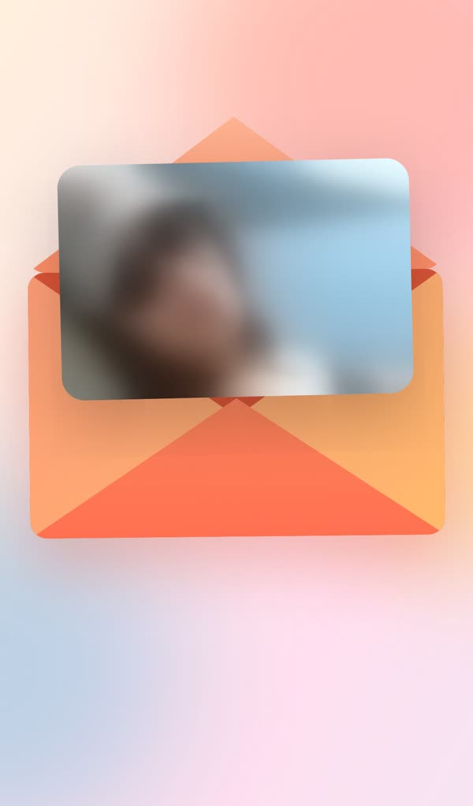
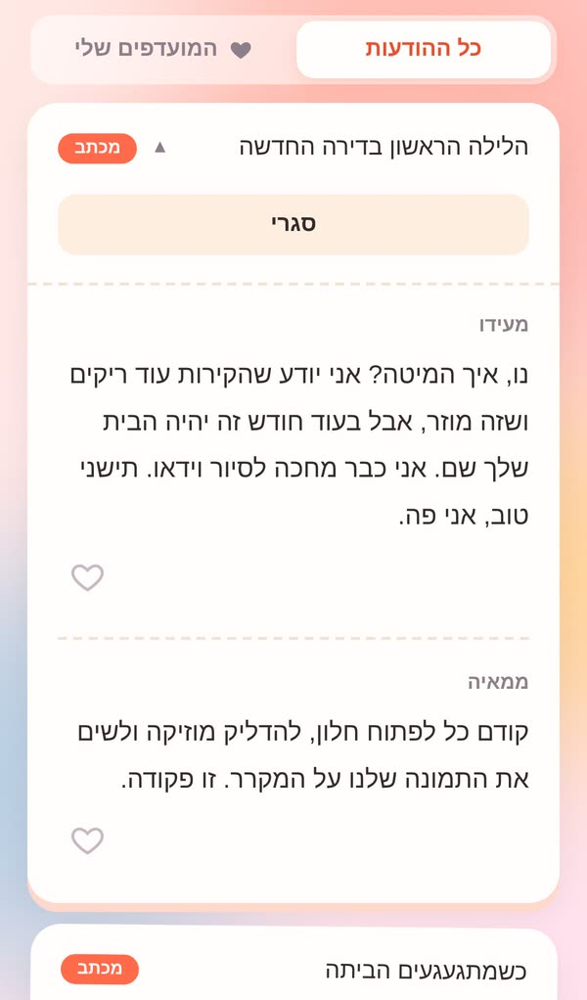
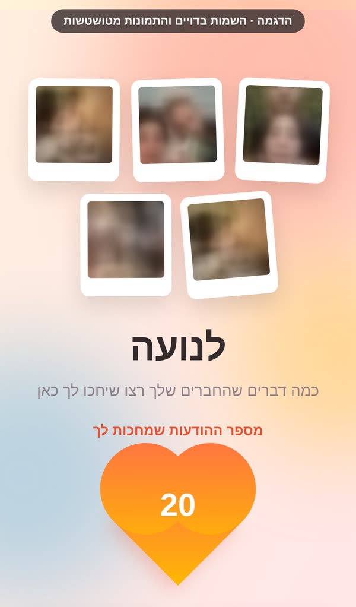
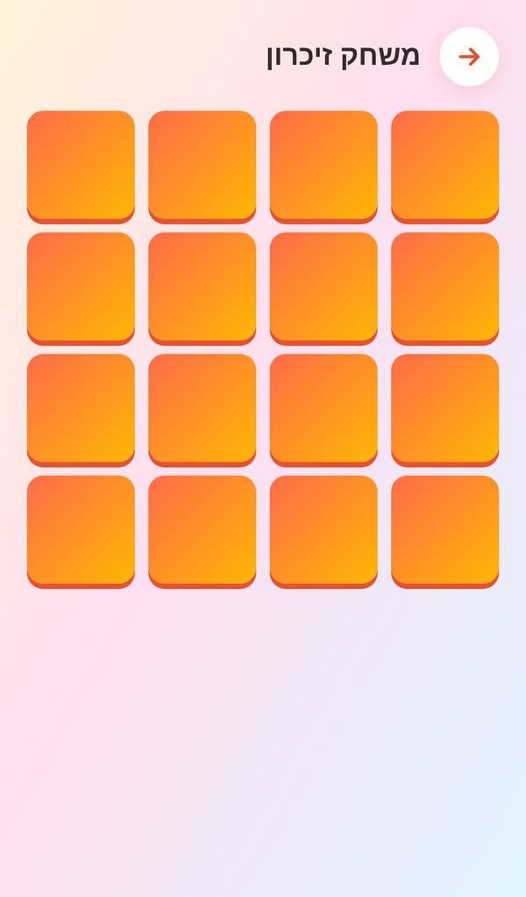
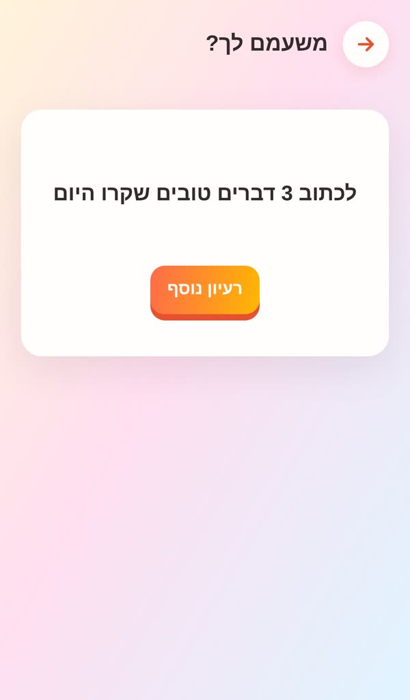

אתר אישי שבו מחכים לו מכתבים, הקלטות ותמונות מכל מי שאוהב אותו. לא לפי תאריך, לפי רגע: הלילה הראשון בדירה ריקה, יום גשום, בוקר שמתעוררים חולים ואין אף אחד מוכר בסביבה.
לבנות אתר פרידה בוואטסאפבאתר הראשון שבניתי ככה כתבו 33 חברים ובני משפחה, ונאספו 70 מכתבים, הקלטות ותמונות.
כמה שאלות על מי שנוסע: כינויים, תמונות, צבעים שהוא אוהב. כ-10 דקות.
כל אחד בוחר רגע, כמו "כשמתגעגעים הביתה" או "כשמשעמם", ומשאיר מכתב, הקלטה, תמונה או סרטון. מהטלפון, בלי להירשם.
האתר נפתח עם סיסמה. וכשהרגע מגיע, יש כפתור אחד: "זה קורה לי עכשיו".





← אפשר להחליק
נבנית מהשאלון
עיצוב וליווי צמוד
מתחלקים? חברים = ₪ לאחד
האתר מוכן תוך כמה ימים מהשאלון. כדאי להתחיל שבועיים-שלושה לפני הטיסה, כדי שלחברים יהיה זמן לכתוב. ואפשר להמשיך להוסיף הודעות גם אחרי שהוא כבר שם.
זה בסדר גמור. גם עשר הודעות זה הרבה כשאתה לבד בעיר חדשה. אני עוזר עם תזכורת חמה בוואטסאפ, והודעות שמגיעות מאוחר פשוט מופיעות באתר.
כן, באייפון ובאנדרואיד, וגם במחשב. אפשר לשמור את האתר במסך הבית ולפתוח אותו כמו אפליקציה. ההקלטות והסרטונים מתנגנים בטלפון.
לפחות שנה מהיום שבו הוא עולה, ואפשר להאריך.